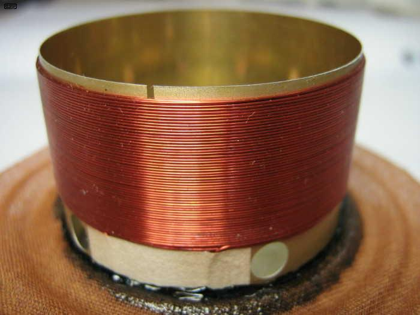

|
|
| Elliott Sound Products | Speaker Failure Analysis |
By Phil Allison, Edited By Rod Elliott
Copyright © 2012 Phil Allison and Rod Elliott
Page Created 29 May 2012
 Articles Index
Main Index
Articles Index
Main IndexSpeaker Failure: The Truth: An analysis of speaker driver failure with particular reference to high powered audio systems as seen in the worlds of Sound Reinforcement and Disco.
Contents
When a woofer or tweeter fails in use, people most often say it has "blown" or "burnt out". But the real situation and what actually causes speakers to suddenly fail is a topic that is rarely explained in any detail. For more information on the reasons that tweeters die, see Why Do Tweeters Blow. To learn what kills woofers, keep reading here.
Because of the lack of solid info, strange myths and weird science abound about speaker failures, and these are sometimes exploited by those who supply and repair speakers to the disadvantage of their customers.
Here is a list of the most common types of speaker failure, in approximate order of likelihood.
While the first item on the list is the primary focus of this article, the other topics are also covered in Section 6. Many may feel that the information here can't possibly be right, but Phil and Rod are in complete agreement - these are the facts. Much that you may read elsewhere is either wishful thinking or fantasy - two commodities that are abundant on the Net.
Speaker voice coils are wound from either copper, aluminium or copper clad aluminium (CCA) wire. The wire may be of round section or sometimes edge wound strip wire is used. Aluminium is half the weight of copper for the same resistance so is preferred for high efficiency drivers and horn diaphragms. In all cases, the wire is coated in an insulating material, generally a synthetic enamel. Aluminium wire may simply be anodised to provide sufficient insulation.
When a current is passed through a voice coil, heat is generated. The amount of heat in watts is given by the very simple formula:
P = I² * R - where I is the RMS current and R is the actual resistance of the wire, at any temperature
With either copper or aluminium wire in use, the R value increases linearly by 0.4% for each degree C rise in temperature. This means the R value doubles if the temp of the whole coil rises by 250°C. Keep that 250°C number in mind as it connects to info to come soon.
Voice coils are wound on short, cylindrical formers made from a variety of materials - the oldest and cheapest is treated paper. High powered speakers generally use formers made from aluminium and more recently high temperature plastics like Kapton. Fibreglass is also quite common, and can be seen in the destroyed voicecoil shown in Figure 5. Of these materials, aluminium is generally the best, because it is thermally conductive and acts as a heatsink for the voicecoil. It's not an especially good heatsink, because it's small and of thin material, but none of the other common formers have any useful heatsinking ability at all.

Figure 1 - 40mm, Dual Layer Voicecoil On Aluminium Former
To stand up to strong drive forces, the wire must be physically held in place by an adhesive applied at the time of winding. It is crucial that this adhesive be able to withstand high temperatures without softening or burning. The best available adhesives (epoxy or polyester/ polyurethane resins) can stand actual temperatures of up to 250°C - at least in the short term.
Heat generated in the voice coil is lost into the air and the magnet structure surrounding the coil. The main mechanism is conduction (aided by convection) across the tiny air gap each side of the coil into the iron pole pieces of the magnet. Magnetic gaps are made from soft iron, as it is easily the best material for the job, while the energising magnet itself is made of Alnico 5, ferrite or more recently Neodymium.
With most high powered woofers, air is also pumped back and forth through a hole in the centre of the pole piece by low frequency cone excursions and this helps to reduce voice coil temperatures. Needless to say, if the driver is used for mid to high frequencies and has little cone movement, there is no pumping effect, so the only cooling mechanism is via conduction/ convection. Some (albeit very few) makers have used small fans to force airflow. These are commonly powered from the audio signal, using a simple rectifier and filter, with the ability to limit the fan voltage to a safe value. There have also been some bizarre arrangements - for example having the magnet assembly (with heatsink) mounted in front of the cone so it gets outside (cool) air rather than the potentially warm air inside the enclosure.
Important Fact:
If ever the temperature of a voice coil, or a part of it, exceeds the softening temperature of the insulation or adhesives used, that coil will fail by coming apart and/ or smoking and burning as the insulation or adhesives simply give up.
Figure 2 - Loudspeaker Motor Construction
The general details of a loudspeaker motor are shown above. There are many variations, but the basics don't change. For example, not all drivers have a vented centre pole-piece, and the position and size of the spider can vary widely. Magnet structures also change, but all loudspeakers feature the centre pole, front and rear plates, voicecoil former, etc.
For a much more informative cutaway view of a real speaker, click HERE. The image is from Calco Cutaways - a company in the US that specialises in making cutaways of actual products for many different industries. My thanks to David Kasper for allowing the link.
This info has been included for anyone who has never dismantled a speaker, and doesn't know about all the hidden parts. It helps to understand where everything goes, as it is obviously important to know the internal construction so the rest of this article makes sense.
Does the Wire Really Melt? Pure copper melts at 1085°C, while pure aluminium melts at 660°C - however the only way such extreme temperatures could ever be reached by a speaker's voice coil is if it actually catches on fire.
3.1 - Why do Speakers Burn?
Very few speakers would ever fail if they were never connected to an amplifier, so it is axiomatic to say that amplifiers destroy speakers.
Back in the valve era, few people owned amplifiers with enough power output to overheat and damage typical speakers. Nowadays, amplifiers with output ratings in the many hundreds and even thousands of watts per channel are commonplace and can EASILY destroy any speaker ever made.
Speaker makers have simply not been able to keep up with this huge increase in amplifier output power despite using every technique available to increase the power handling ability of their products.
So, what most makers have done instead is to increase the published ratings to provide some impressive looking figures - but often with little or no reality behind them. Anyone silly enough to take these inflated numbers literally is going to become a regular customer for repairers.
3.2 - Amplifier Clipping is the Culprit (??)
Power output ratings given by the makers of high power audio amplifiers are almost without exception quite genuine. Amplifiers are rated to produce continuous, sine wave power in real watts. Also, most power amplifiers can produce a lot more watts than the figures show if allowed to operate into clipping distortion. This is simply because a square wave shape has twice the power of a sine wave of the same amplitude.
The hazard with allowing an amplifier to clip is NOT that there is anything inherently evil about a clipped (or square) audio frequency wave but simply that the effective power output has increased - often dramatically!
With music programme, the average power delivered to the speaker can increase by up to 10 times when an amplifier is clipping compared with the non-clipping situation. The reason behind this is that clipping is the simplest form of audio compression and compression INCREASES the average level of a signal. It's not the fact that the amp is clipping that causes failures - it's the extra power that's delivered to the speaker.
The increase in the average power is proportional to the increase is system GAIN setting compared to the non clipping setting.
Example: A moderate level of clipping on music or speech programme is when signal peaks are reduced by half - commonly referred to as 6dB of clipping. To correct this, system gain must be reduced by 6dB. When the gain is reduced by 6 dB, then the average power output is also reduced by a similar amount. 6dB less equates to one quarter the power.
Figure 3 - Power Output, Clipped And Unclipped
In the traces shown above, a 180W amplifier (360W peak) is overdriven to about 3.5dB of clipping (green trace), and delivers an average power of 100W. In order to prevent any clipping with the signal shown (which was simulated), the amplifier power needs to be increased to around 800W peak (a 400W amplifier). As you can see from the average power figures, the higher power amp has increased the power going to the speaker to 120W. More power always equates to more heat - never less!
This demonstrates quite clearly that the idea of using bigger amplifiers to "prevent speakers from failing" is just silly - it does no such thing, and never did. Couple this with the almost certain knowledge that the operator will increase the gain to make the sound louder, and now the 400W amp will be driven into clipping, and the average power will increase more.
Something to Consider - A given voice coil can tolerate a certain average power input without damage, insulation and adhesives will become very hot but not quite reach the melting temperature. This can go on indefinitely. However - an inaudible 1dB extra average power input could push this situation over the edge and produce sudden speaker failure.
Attempting to judge just where the edge lies by ear is simply impossible !!!
Makers give every speaker a "nominal impedance" value, normally 4, 8 or 16 ohms - this is done both for individual drivers and well as complete systems. Nominal implies "in name only" so it simply characterises a driver rather than specifying it properly.
In the case of a cone driver, like woofers and instrument speakers, the situation is simple and the nominal value can be found by an ohm meter test and applying a simple formula ...
Nominal Impedance = R plus 15% - where R is the DC resistance in ohms
The "nominal impedance" of a woofer or instrument speaker is the LOWEST value of the REAL impedance that driver exhibits in the audio range and at room temperature. The actual minimum typically occurs in the band between 200 Hz and 500 Hz and the usual test frequencies are 250 Hz or 400 Hz. See the impedance graph on page 2 of the JBL 2226 speaker datasheet [1].
Being an impedance minimum means that it is a pure resistance too, with current and voltage in phase. The extra 15% comes from energy losses in the suspension, eddy currents the iron magnet structure and radiated sound.
Outside the frequency range above, impedance values can change enormously but do not - anywhere - fall to a lower value than the nominal one. Below 250 Hz, the enclosure has a major effect on actual impedance values, which only testing or careful software modelling will reveal. The shame is how few makers publish accurate impedance curves for their products in real enclosures.
Note ... when operating at maximum tolerable power levels, voice coil temperatures may reach over 200°C so the DC resistance can almost double. This means that cone movement is far less damped than when at room temp and any passive crossover points have shifted. This is covered in some detail in the ESP article Passive Crossover Design.
If the DC resistance doubles, so too does the impedance, so while you may have thought you were feeding the speaker with (say) 700W, the actual figure is closer to 350W. This reduction of actual power (and equivalent reduction of SPL) is called 'power compression'. Only a few loudspeaker driver manufacturers are brave enough to publish figures for power compression. Should you turn up the gain to get your 700W back again, the speaker will die, as it was at its very limits already.
Almost no speaker maker gives REAL power ratings for their products. Instead they supply "nominal" ratings based on "nominal watts". Few makers ever actually point out this crucial fact.
A "nominal watt" is based purely on a simple, but absurd, calculation that assumes the speaker maintains it nominal impedance at all frequencies and under all operating conditions.
The usual power handling test done on a high powered woofer is to install it in a large cabinet or perhaps in free air, and feed it with modified pink noise filtered to the 50 Hz to 500 Hz band or possibly the 50 Hz to 5,000 Hz band. (See note below.)
The output level from the amp is then adjusted upwards until the voice coil is dangerously hot and left like that for a couple of hours. The RMS voltage being delivered by the amp is measured, the value squared and divided by the nominal impedance to give "max watts". See AES-2 1984 "Speaker Testing" link 2.
As a result of this patent absurdity - the actual watts dissipated by the speaker during such testing may well be only 20 to 25% of the published max watts figure.
Important Fact - If such power tests were ever repeated with the drive signal from the amplifier being a pure sine wave at 250 Hz (or octave band, pink noise centred on 250 Hz ) the same speaker would be quickly be destroyed by the extra heat dissipation. It is very easy to measure these parameters, but the results are so unflattering almost no maker does so or publishes the results today.
Note ...
As noted in the introduction, there are several different ways (other than overheated voicecoils) that cause a loudspeaker driver to fail. Most are directly attributable to excessive power, but not always ...
Flexible & Feed Wire Failure - All cone speakers have flexible "tinsel" wires (see below) that connect the terminals to the moving cone. These are made from fine copper or silver strips woven with cotton to prevent chafing and fractures. Sometimes the terminations at either end fail and current flow becomes intermittent or stops. Repair is usually a simple enough job.
The round wire or flat strip used to make the voice coil is brought out and travels along the surface of the cone to the termination point for the tinsel. Sometimes this solid wire fractures due to flexing of the cone near where it attaches to the voicecoil. Repair is not always possible.
Figure 4 - Examples Of Copper And Silver Tinsel
Glue Failure of Voice Coil Attachments - For a host of reasons, glue attachment of the voice coil to the cone or spider may fail. The immediate result of even a partial failure is the voice coil is no longer precisely centred.
An off-centre voice coil will scrape against the pole pieces and this soon damages the wire it is wound from, possibly creating shorted turns in the process. This highly audible defect is called "poling" by repairers.
Broken or cracked attachments vibrate severely under normal drive forces, so this is also highly audible as buzzing noise or distortion. Repair is sometimes possible but re-coning or replacement is often needed.
Mechanical Failure of the Cone - Speaker cones are very lightweight, fragile structures. Mostly made from cardboard, moulded paper pulp or plastic it is easy for them to become creased or torn in use. Surrounds can also fail, either due to damage or disintegration - especially foam surrounds!
Again, this often results in the voice coil going off-centre and the speaker is soon rendered useless. Repair to the cone may be possible, if caught early.
Foreign Objects in the Magnet Gap - Since there is an intense magnetic field inside the gap of a loudspeaker - any small, loose steel or other magnetic particle is likely to wind up there if it can. Such particles may come from the magnet structure itself (e.g. nickel plating peeling off) or from the outside world. The vent hole in the back of many woofer magnets is a favourite entry point.
Once inside the gap, these particles wreak havoc - scraping off insulation from the wire and shorting the coil to the magnet structure at one or several spots. Complete destruction is only minutes away where a high powered amp is in use.
Another hazard is particles of disintegrating plastic foam used for speaker grilles or as a filter for the vent hole through the centre pole-piece. These can easily find their way into the gap and become melted by contact with a hot voice coil. Such melted particles solidify, stick to the voice coil or pole faces and do similar damage to that of metal particles by causing the voice coil to scrape against the pole pieces. Repair is usually impossible.
Some hi-fi woofers have an exposed voicecoil - it's not sealed off by the spider. Needless to say, this allows very easy ingress for magnetic particles or other debris.
Mechanical Failure of the Magnet Structure - Typical speaker magnets consist of top and bottom plates, a solid or hollow centre pole piece and a donut shaped magnet. All these parts are highly magnetised and must be held very firmly in place by bolts, steel rivets and/or strong adhesives. Usually, the gap where the voice coil lives is only a couple of millimetres wide and must be precisely even all around.
Figure 5 - Magnetic Gap For 40mm Voicecoil
If the glue fails, the bolts come loose or the whole assembly suffers a major impact, this careful alignment is ruined and the voice coil winds up jammed tight in the gap. In extreme cases, ceramic magnets may break. Should this happen, the speaker is a write-off and cannot be repaired.
Repair may be possible provided the magnet is intact, but the assembly will require full demagnetisation of the structure and eventual re- magnetisation. Few repairers will even attempt it.
Failure due to Over Excursion of the Cone - While possible, it is not one of the common failures in speakers designed for commercial use. Makers long ago realised that they must design drivers so that voice coils and cones cannot be driven into the magnet structure or frames. Even one such impact can mean the end for the speaker and can result simply from a single switch on or off thump delivered from an amplifier.
In the days of vinyl recordings, dropping the stylus onto the disc produced a large subsonic signal that easily bottomed woofers. Any speaker that did not survive this was simply not fit for sale.
When a cone moves outwards or inwards, a point is soon reached where the surround and the spider are stretched to their limits and will not allow any further movement. At the same time, the voice coil has moved out from the gap and is no longer surrounded by the same intense field and so experiences considerably less drive force than when it is in the rest position. As long as the alignment of the voice coil remains good at the excursion limits, there is unlikely to be any mechanical damage. However, as noted earlier, once the voicecoil has left the gap it has very little cooling, so can easily overheat.
Where mechanical damage does occur, it is normally only with those woofers that have unusually long voice coils and so cannot leave the gap. Many hi-fi sub woofers are built like this.
 | NOTE: Woofer cones may also be damaged by sudden changes in air pressure that force the cone deep into or out of the frame. The careless use of pyrotechnics on stage is one scenario and another is slamming a hinged door on a transport vehicle that is otherwise air tight. Woofers in ported boxes are the most vulnerable. |
A burnt voice coil often tells a story, much like the evidence left at a crime scene does. The degree of burning or damage seen is not conclusive because the initial damage that led to failure can be very minor but turn into major damage when amplifier power continues to be delivered, as it normally does, until sound output stops.
A few examples will help illustrate the idea:
1. Black discolouration in the middle or all over the voice coil
This is the most common damage seen and indicates that a well centred coil was driven with too much audio power for too long. The resistance of the burnt coil is often half or less the nominal value due to internal shorting.
2. Black discolouration at one end of the voice coil.
This is also a common sight and indicates either the voice coil was not centred during manufacture OR that the damage was caused by DC current rather than audio frequency current. A large DC current will displace the voice coil to one or other extreme. A faulty amplifier is automatically suspected.
3. Black discolouration at both ends of the voice coil
More likely to be seen with large excursion and "Hi-Fi" sub woofers where the voice coil is longer than the magnet gap depth. The portions that "overhang" the gap are not so well cooled and will burn up first.
4. Scraping marks and black spots on the voice coil
This is a sure sign of metal particles caught in the gap. The most likely time for such particles to enter is when a speaker is being re-coned and the gap is wide open after the old cone has been removed.
5. Loose wires hanging off the voice coil
Typical of a adhesive failure at high temperature. The adhesive used may have been of low temp grade or was not correctly mixed.
6. Looks fine but tests open circuit
This is a nasty one as it indicates bad manufacture. The ends of the voice coil wire were not terminated well enough for the speaker to survive normal use. Most often seen where anodised Aluminium wire or strip is used for the voice coil. This failure is seen with horn diaphragms too.
Figure 6 - Total Destruction!
Figure 6 shows what happens when a voicecoil is subjected to prolonged high power well beyond the point of initial failure. The destruction is complete.
1. The Oscillations Myth
Since it is possible for an audio amplifier to oscillate at very high ( supersonic ) frequencies, it is widely assumed that this inaudible oscillation will silently damage woofers and instrument speakers in the same way that over powering does. So the story is often trotted out to explain burn voice coils.
FACT: The vast majority of woofers and instrument speakers are immune from damage by inaudible high frequencies. The very high self inductance of the voice coil at frequencies at or above 20 kHz means the current flow is small and no serious heating can happen. Look at the JBL 2226 impedance curve - it's over 100 ohms at 20 kHz [1]
2. The Clipping is Like DC Myth
Just as a woman cannot be a "little bit pregnant" - you cannot have little bits of DC. DC only comes in large and prolonged doses, anything else is AC.
The whole idea that clipped or flat topped waves have "little bits of DC" is complete nonsense, as is the even sillier idea that a cone is somehow rendered stationary whenever the drive wave is flat topped.
Clipping of an audio signal merely limits the peak amplitude and raises the average value - square shaped waves are just combinations of sine waves with many harmonics.
Note:
1. The pink noise used in the AES test is simply clipped to provide a 6 dB peak to RMS ratio. Natural pink noise has a 14 dB peak to RMS ratio. In case you missed the significance of that, the test signal recommended by the AES for power ratings is a deliberately CLIPPED signal !!
3. Smaller Amps are More Likely to Damage Speakers than Bigger Ones Myth
This naïve corollary to the clipping myth is also utterly wrong (see Figure 3). Since average power over time is what heats and burns a voice coil - a larger amp is always potentially more hazardous to a speaker. The popularity of 1000 watt plus per channel amplifiers relies on this complete nonsense being believed by a great many folk in pro audio.
It should hardly require any explanation - if you replace a smaller amp that is clipping with a bigger one that eliminates that clipping, then average power output must go up. This is shown clearly in Figure 3.
Likewise, we would hope that no-one would believe that a 50W amp driven hard into clipping (with a full-range signal) will damage a 500W speaker. Unfortunately, there appear to be people who do believe that is the case. In theory it might possible, but extremely unlikely.
Some famous US speaker makers (e.g. Bose and JBL) have discovered how to prevent speaker failures and dramatically improve the input power ratings at the same time. Impossible you say? Actually, it is dead easy.
All you need to do is fit a low voltage halogen light bulb in series with your woofer - chosen so it has almost no effect at the 1 watt level where efficiency figures (dB per watt) are always measured and quoted but lights up brightly and limits current flow when the power input is enough to threaten the woofer. This works because the resistance of the filament typically varies by around 1:10 from cold for full brightness, so when hot, the series resistance is high enough to protect the speaker.
If higher than rated system power is ever applied, the bulb simply burns out rather than the woofer!!!
Using this approach, a 4 inch 20 watt, 2 ohm wide range driver becomes rated at 80 watts in the Bose 101.
Similarly, a 6.5 inch, 30 watt, 4 ohm woofer accepts 160 watts of "nominal" input in the JBL Control 5. [3]
Pure genius or a dishonest but cunning dodge? Seems all is fair in a game where reality has been rendered meaningless.
1. Using a compressor / limiter - Compressors are designed to make an audio signal seem louder, by reducing the dynamic range and increasing the average level. This is very useful in broadcasting where a radio transmitter must not be driven beyond its modulation limit but the owners want the biggest possible audience coverage. Similarly with audio recording, large dynamic ranges are mostly an embarrassment and louder sounding music is generally a better seller. However, with loudspeakers increasing the average power input only makes them BURN FASTER.
2. Using fuses - With a given amplifier and speaker, maximum current flow will only exist when the speaker's voice coil is at or near room temp. As the voice coil heats its resistance rises and max current flow will fall significantly.
So, a fuse size that does not blow immediately on a sudden burst of full power will in fact probably never blow at all. Makes them pretty much useless.
1. A carefully chosen PTC thermistor or "PolySwitch" is capable of preventing long term overpowering. These devices have slow response times, comparable with those of voice coils and can be sized to allow short term over powering while cutting off the amplifier if dangerously high power is applied for too long. As they only react to long term RMS current flow, they are almost ideal for protecting speakers.
Selecting exactly right one is a job for an expert and there are voltage limits, however devices rated at 72 volts AC and 99 volts AC are now available. Once tripped, a PTC takes a minute or so to self reset and this is generally not acceptable in live music applications.
2. Using Light Bulbs - One or more low voltage bulbs (12 or 24 volt) can protect a low powered speaker from a high powered amplifier. They are commonly seen being used to protect the horn drivers in multi-way speaker systems employing passive crossover networks.
Their choice and installation is also a job for an expert, but once fitted operation is seamless and reliable. Such bulbs react slowly to high current flow and set an upper limit to that current. But unlike the PTC, they never cut the sound off and once over driving ceases, reset to normal immediately.
The standard lamp used by many speaker system manufacturers seems to be an SK3 [4] - this is a 12.8V, 2.1A, 27W lamp according to the details I could find, and is available with flying leads to allow it to be soldered onto a printed circuit board or sometimes with end caps that fit into a socket. The lamp must naturally be secured against movement or the leads will break off. In some cases, two lamps are used in series for higher powered systems, and a parallel resistor may be included. In most cases, the lamps are used to protect compression drivers rather than woofers - this is a legitimate and effective means of protecting horn drivers from excessive power (the lamps will probably never get much above dull red with normal use).
3. Peak Limiter - While stated above that compressors don't work, you can use a peak limiter, but the setup is critical. It must be set for fast attack and s-l-o-w release (5 seconds or more!). This limits the peak power, but maintains most of the original dynamic range. It is rare to see limiters set up correctly so they actually will protect speakers, but it can be done and will work well if done properly. In some cases, audible "pumping" effects may be produced - this means that the decay time is too fast.
The 40mm voice coil shown in Figure 1 was available to be tested to destruction - shown in Figure 7. Increasing DC current was gradually applied until the resistance rose from 5.0 ohms to 10 ohms equating to a temperature rise of 250°C. The final applied power was 38 watts and the final resistance when it cooled down measured 2.1 ohms, indicating a short had developed between the two layers. This is a very typical failure mode.
Figure 7 - Burnt, Internally Shorted 40mm Voicecoil After 2 Minutes At 275°C
In particular, note the power that was used to destroy this voicecoil! 38 Watts can hardly be considered wildly excessive, but if this driver was used for lower midrange in a high powered system, it's unlikely that there would be enough air movement to cool the assembly enough to ensure its survival. There would certainly be some cooling from the pole pieces, but no-one could ever expect a driver using this voicecoil to withstand much more than perhaps 150W programme material (an average power of about 38W). At that power level, the coil will still get very hot, but is likely to survive. This doesn't mean that it will survive though!
| It is very important to understand that the use of DC was NOT what caused the damage seen. Exactly the same effect would have occurred if 38 watts of AC had been used instead. Power in Watts is completely independent of frequency, so 38W is 38W, regardless of the signal frequency. The power dissipated is simply the product of RMS voltage and RMS current, and the RMS value of an AC waveform is defined as that which causes an identical amount of heat as the same voltage and current with DC. This does require that the load is not reactive, and the inductance of the voicecoil shown is nowhere near enough to cause a problem at any normal test frequency (which would typically be 50/ 60Hz for this kind of test). The benefit of DC is that it is easily measured, and is very stable if a regulated bench power supply is used, simplifying measurement. |
As well as several items appearing on this site, Phil has authored numerous audio related project articles published in "Electronics Australia" magazine from 1985 to 1998.
Phil studied Electrical Engineering at the University of Sydney in the 1970s.